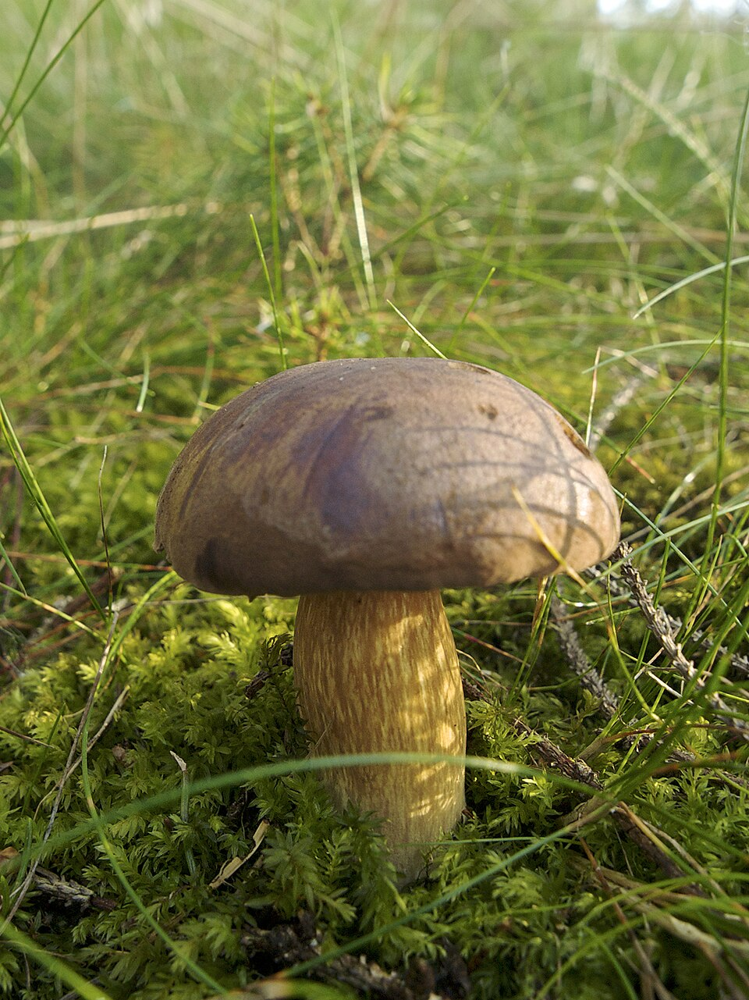
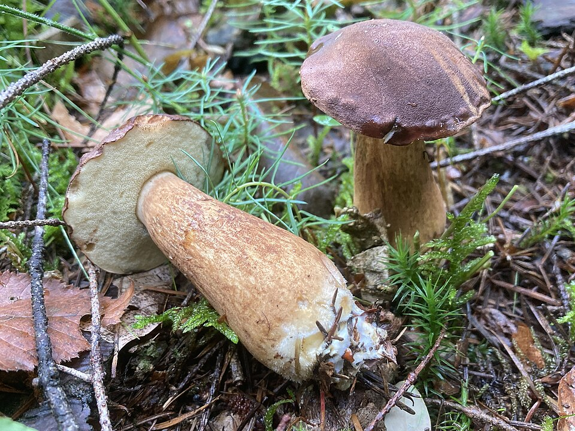

Podgrzybek brunatny



Opis i występowanie
Podgrzybek brunatny to jeden z najliczniej występujących grzybów jadalnych w lasach iglastych całej Polski, Słowacji i Czech. Rośnie szczególnie masowo pod sosnami i świerkami, często tworząc duże skupiska w mszystych lasach. To grzyb typowy dla Sudetów, Tatr i Beskidów.
Kapelusz ma kształt półkolisty do poduszkowatego, 4–15 cm, kasztanowo- do ciemnobrązowego, suchy w dotyku (w przeciwieństwie do maślaka). Pory białe u młodych, kremowe u dojrzałych. Trzon 5–12 cm, brązowy, bez siateczki (ważna cecha odróżniająca go od borowika).
Charakterystyczna i jedyna w swoim rodzaju cecha: miąższ i rurki po przekrojeniu lub naciśnięciu sinieje — zmienia kolor na niebieskofioletowy. Jest to całkowicie normalny proces enzymatyczny (oksydacja variegatu) i nie świadczy o trujących właściwościach.
Skład — wartości odżywcze
| Składnik | Wartość / efekt |
|---|---|
| Białko (3,2 g/100g) | Dobry profil aminokwasowy |
| Witaminy B2, B3 | Metabolizm energetyczny |
| Selen, miedź | Antyoksydanty |
| Błonnik | Zdrowie jelit |
| Ergosterol (prow. D2) | Witamina D po ekspozycji na światło |
| Kalorie: 20 kcal/100g | Bardzo niskokaloryczny |
Zastosowania kulinarne
- Zupy grzybowe — doskonały do klasycznej zupy grzybowej i bigosu.
- Smażenie — na maśle z cebulą; kolor ciemnieje, ale smak świetny.
- Suszenie — suszone mają intensywniejszy aromat niż świeże.
- Marynata — zwarte rurki trzymają formę po obgotowaniu.
- Farsz — do pierogów, krokietów, kapusty.
Zbiór i przechowywanie
- Zbieraj nożem. Trzon często zamieszkany przez robaki — sprawdź przekrajając.
- Trwałość świeżych: 2–3 dni w lodówce.
- Suszenie: 40–50°C, pokrojone na 5 mm plastry, 4–6 h. Znakomity susz.
- Mrożenie: zblanszuj 3 min lub usmaż, dopiero zamrażaj.
Przepisy
🍲 Klasyczna zupa grzybowa
- Świeże: umyj, pokrój, gotuj 20 min w 1,5 l wody. Susz: namocz noc, gotuj w tej wodzie 40 min.
- Cebulę i czosnek podsmaż na maśle, dodaj do wywaru.
- Grzyby wyjmij, posiekaj, wrzuć z powrotem. Zapraw śmietaną rozmieszaną z mąką.
- Dopraw solą, pieprzem, maggi. Podawaj z makaronem lub łazankami.
🥘 Bigos z podgrzybkami
- Grzyby namocz, ugotuj, posiekaj (wywaru nie wylewaj).
- Kapustę kwaszoną i świeżą (pół na pół) ugotuj. Mięso (kiełbasa, boczek, resztki) podsmaż.
- Połącz kapustę, mięso, grzyby z wywarem grzybowym w garze.
- Gotuj na małym ogniu min. 1,5 h. Bigos smakuje najlepiej drugiego dnia.
🫙 Marynowane podgrzybki
- Podgrzybki obgotuj 10 min w osolonej wodzie z octem. Odcedź.
- Zalewa: woda, ocet 10% (3:1), cukier, sól, liść laurowy, ziele angielskie, gorczyca.
- Ułóż grzyby w słoikach, zalej gorącą zalewą, pasteryzuj 15 min.
🍳 Smażone podgrzybki z cebulą
- Podgrzybki oczyść i pokrój w plastry 5 mm.
- Cebulę podsmaż na maśle do złota. Dodaj grzyby, smaż na dużym ogniu 8 min.
- Dodaj czosnek, tymianek, dopraw solą i pieprzem. Podawaj do kaszy lub chleba.
✓ Zalety
- Najpospolitszy grzyb jadalny — łatwy do znalezienia
- Dobry smak w zupach, bigosie, marynata
- Długi sezon — od czerwca do przymrozków
- Doskonały do suszenia
- Rzadko atakowany przez robaki (w porównaniu z borikiem)
✗ Wady i uwagi
- Słabszy aromat niż borowik szlachetny
- Sinienie może przeszkadzać wizualnie w potrawach jasnych
- Możliwa pomyłka z goryczakiem żółciowym (goryczak nie sinieje!)
- Stare okazy mają gąbczaste rurki — zbieraj tylko młode
Podobny kształt do podgrzybka i borowika. Kluczowe cechy: pory różowawe (nie białe/kremowe), miąższ smakuje ekstremalnie gorzko — nawet mały kawałek niszczy całe danie. Goryczak NIE sinieje! Nie jest trujący, ale niejadalny. Sprawdź kolor porów i oblicz kawałek — jeśli gorzki, wyrzuć.
Ciekawostki
- Sinienie podgrzybka to reakcja enzymu variegatu z powietrzem — podobna jak brązowienie jabłka, ale w kolorze niebieskim.
- Podgrzybek i borowik to grzyby mykoryzowe — żyją w symbiozie z drzewami. Ich grzybnia przekazuje drzewom wodę i minerały w zamian za cukry.
- W Czechach hřib hnědý jest jednym z najpopularniejszych grzybów jadalnych — trafia do niemal każdej zupy grzybowej.